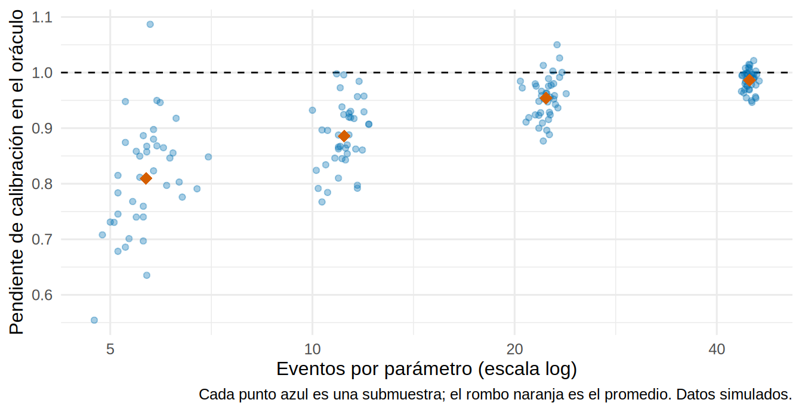

library(tidyverse)
library(survival)
source("R/funciones_extra_c17.R")
theme_set(theme_minimal(base_size = 12))
# Cohorte de desarrollo (SIMULADA): 3 000 pacientes con ERC G3b-G5, seguimiento hasta 60 meses
dev <- read_csv("Bases/cohorte_pronostico.csv", show_col_types = FALSE) |> preparar_pronostico()¿Cuántos pacientes necesito para construir un modelo de predicción?
Nota🩺 Escenario
Tu servicio tiene un registro de 3 000 pacientes con ERC avanzada y quieres construir una calculadora que estime el riesgo de falla renal a 2 y 5 años. Un colega propone “meter las 30 variables que tenemos, que para algo están”. Otro dice “con 10 eventos por variable alcanza”. Antes de ajustar nada conviene preguntarse cuánta información hay de verdad en el registro y cuántos parámetros se la pueden permitir al modelo sin que se “memorice” a los pacientes de la muestra.
Un modelo de predicción se puede equivocar de dos maneras: por no tener la forma correcta y por tener demasiados parámetros para tan pocos eventos. La segunda se llama sobreajuste (overfitting): el modelo aprende el ruido de la muestra y, cuando lo aplicas a pacientes nuevos, sus predicciones salen demasiado extremas (bajos muy bajos, altos muy altos). Lo bueno es que se puede calcular de antemano cuánta muestra evita ese problema.
Lo que vamos a hacer
- Contar eventos (no pacientes) y parámetros (no variables), y calcular los eventos por parámetro (EPP).
- Ver el sobreajuste con submuestras de nuestra cohorte y compararlo con la verdad.
- Aplicar los criterios de Riley en versión simplificada con una función propia, y ver qué hacer cuando la muestra ya está dada.
Paso 1: contar eventos y parámetros
Dos conceptos que se confunden a menudo:
- El tamaño efectivo de un estudio de pronóstico no es el número de pacientes sino el de eventos del desenlace que quieres predecir. Con un desenlace binario es el grupo menos frecuente.
- Un parámetro es cada coeficiente que el modelo debe estimar. Una variable continua lineal cuesta 1; una categórica con k niveles cuesta k − 1; una curva flexible (spline) puede costar 3 o más; cada interacción suma otro.
Veamos qué tenemos. El desenlace de interés es la falla renal (diálisis o trasplante); la muerte previa es otro evento (lo retomamos en 17.2).
resumen <- dev |>
summarise(pacientes = n(), falla_renal = sum(krt), muertes_sin_falla = sum(muerte),
censurados = sum(estado == 0))
resumen pacientes falla_renal muertes_sin_falla censurados
1 3000 839 482 1679# Eventos por parámetro para modelos de distinto tamaño
tibble(parametros = c(8, 15, 30, 50)) |>
mutate(eventos_por_parametro = epv(resumen$falla_renal, parametros) |> round(1))# A tibble: 4 × 2
parametros eventos_por_parametro
<dbl> <dbl>
1 8 105.
2 15 55.9
3 30 28
4 50 16.8Qué vemos. Aunque el registro tiene 3 000 pacientes, solo 839 tuvieron el evento que queremos predecir. Con 8 parámetros (el modelo que desarrollaremos en 17.2) hay 105 eventos por parámetro: mucha holgura. Con las 30 variables del colega habría 28 (aceptable en este registro; en uno pequeño sería un desastre, como verás en el paso 4) y con 50 parámetros, 17.
Cuenta parámetros, no variables, y cuéntalos todos. Todos los parámetros que “pasan por tus manos” cuentan, incluso los de variables que luego descartas: si miraste 30 candidatas y te quedaste con 8, el sobreajuste que debes temer es el de 30. Un spline con 4 nudos cuesta 3 parámetros, una variable categórica de 5 niveles cuesta 4 y cada interacción cuesta uno más.
Paso 2: ver el sobreajuste con nuestros propios ojos
La famosa “regla de 10 eventos por variable” es, en realidad, una costumbre. Pongámosla a prueba. Como los datos son simulados, tenemos un oráculo: una cohorte enorme de la misma población (30 000 pacientes, sin censura) con la que medir la verdad de cualquier modelo.
El experimento, repetido 40 veces por cada tamaño:
- Sacamos una submuestra de n pacientes de la cohorte.
- Ajustamos un modelo “hambriento” de 15 parámetros: las 9 variables clínicas y 6 variables de puro ruido, que no tienen nada que ver con el desenlace.
- Medimos el rendimiento del modelo en la propia submuestra (aparente) y en el oráculo (real).
# 30 000 pacientes de la misma población, SIN censura: la "verdad"
oraculo <- oraculo_pronostico(30000, "desarrollo", semilla = 99)
tamanos <- c(300, 600, 1200, 2400)
exper <- map_dfr(tamanos, \(n) {
experimento_sobreajuste(dev, oraculo, n = n, R = 40, semilla = n) |> mutate(n = n)
})
resumen_exper <- exper |>
group_by(n) |>
summarise(eventos = mean(eventos), parametros = first(parametros),
epp = eventos / parametros,
c_aparente = mean(c_aparente), c_real = mean(c_oraculo),
pendiente_real = mean(pendiente_oraculo), dt_pendiente = sd(pendiente_oraculo), .groups = "drop")
resumen_exper |> mutate(across(c(eventos, epp), \(x) round(x, 1)),
across(c(c_aparente, c_real, pendiente_real, dt_pendiente), \(x) round(x, 3)))# A tibble: 4 × 8
n eventos parametros epp c_aparente c_real pendiente_real dt_pendiente
<dbl> <dbl> <int> <dbl> <dbl> <dbl> <dbl> <dbl>
1 300 84.8 15 5.7 0.813 0.77 0.809 0.099
2 600 167. 15 11.1 0.808 0.779 0.886 0.06
3 1200 334. 15 22.3 0.801 0.782 0.954 0.038
4 2400 671. 15 44.8 0.801 0.784 0.986 0.019Para leerlo: la pendiente de calibración (calibration slope) responde a “si el modelo dice que un paciente tiene el doble de riesgo, ¿de verdad lo tiene?”. Vale 1 si el modelo está bien calibrado; un valor menor que 1 indica que las predicciones son demasiado extremas, que es la firma del sobreajuste (Collins y cols., BMJ 2024; lectura del autor).
exper |>
mutate(epp = eventos / parametros) |>
ggplot(aes(epp, pendiente_oraculo)) +
geom_hline(yintercept = 1, linetype = "dashed") +
geom_point(alpha = 0.35, color = "#0072B2") +
geom_point(data = resumen_exper, aes(epp, pendiente_real), size = 3.5, shape = 18, color = "#D55E00") +
scale_x_log10(breaks = c(5, 10, 20, 40, 80)) +
labs(x = "Eventos por parámetro (escala log)", y = "Pendiente de calibración en el oráculo",
caption = "Cada punto azul es una submuestra; el rombo naranja es el promedio. Datos simulados.")
Qué vemos.
- Con 5.7 eventos por parámetro (n = 300), la pendiente real promedio es de solo 0.81, y además es inestable (desviación estándar de 0.1 entre submuestras, 0.02 con n = 2400): las predicciones son demasiado extremas.
- Con 11.1 eventos por parámetro (cerca de la regla de 10) la pendiente sube a 0.89: mejor, pero aún con sobreajuste.
- Hacen falta unos 22 a 45 eventos por parámetro para acercarse a 1 (0.95 y 0.99).
- El C aparente (0.81 con n = 300) siempre supera al C real (0.77): el modelo se ve mejor de lo que es, y la brecha se cierra al crecer la muestra. Eso es el optimismo, que vuelve en 17.4.
Paso 3: los criterios de Riley, en lenguaje claro
Riley y colaboradores (Stat Med 2019; BMJ 2020) propusieron dejar la regla de los 10 y calcular la muestra mínima con tres preguntas. Las diapositivas de Riley que el autor incluyó en su taller de aprendizaje automático las presentan así, y las resumimos:
- Encogimiento: ¿cuántos pacientes necesito para que, al validar el modelo, no haya que “encogerlo” más de un 10 % (pendiente esperada ≥ 0.9)?
- Optimismo: ¿cuántos para que el \(R^2\) aparente no supere al real en más de 0.05?
- Precisión del riesgo global: ¿cuántos para estimar el riesgo promedio de la población con un margen de error de ±5 puntos?
Se necesita el mayor de los tres. Para calcularlos hay que fijar de antemano: el número de parámetros candidatos, el riesgo global del desenlace y el \(R^2\) de Cox-Snell que esperas del modelo (de un estudio previo, de un modelo ya publicado o de un piloto; si dudas, sé conservador, porque un \(R^2\) menor exige más muestra).
Escribimos la versión simplificada como función propia, tamano_muestra_riley(). Primero comprobamos que reproduce el ejemplo de las diapositivas de Riley (desenlace binario, \(R^2\) de Cox-Snell = 0.2, riesgo 50 %, 30 parámetros):
# Ejemplo de las diapositivas de Riley (material del autor): resultados publicados 1194, 701 y 385
tamano_muestra_riley(parametros = 30, r2_cs = 0.2, tipo = "binario", prevalencia = 0.5)# A tibble: 3 × 3
criterio n eventos
<chr> <dbl> <dbl>
1 1. Encogimiento (>= 0.90) 1194 597
2 2. Optimismo del R2 (<= 0.05) 701 351
3 3. Precisión del riesgo global 385 193Coincide con los números de la diapositiva (1 194, 701 y 385). Ahora, nuestro caso: falla renal con seguimiento hasta 5 años (un desenlace de tiempo hasta evento). Necesitamos tres datos de la cohorte: la tasa de eventos, el seguimiento medio y el riesgo a 5 años.
persona_anios <- sum(dev$tiempo_meses) / 12
tasa <- sum(dev$krt) / persona_anios # eventos por persona-año
seg_medio <- mean(dev$tiempo_meses) / 12 # seguimiento medio en años
riesgo_5a <- cif_observada(dev$tiempo_meses, dev$estado, 60)$est # riesgo a 5 años (con riesgo competitivo)
# R2 de Cox-Snell aparente del modelo completo: 1 - exp(-chi2 de razón de verosimilitud / n)
m_piloto <- coxph(Surv(tiempo_meses, krt) ~ edad + sexo + tfg + lu + albumina + fosforo + bicarbonato + dm, data = dev)
r2_cs <- 1 - exp(-2 * diff(m_piloto$loglik) / nrow(dev))
c(tasa = tasa, seguimiento_medio_anios = seg_medio, riesgo_5a = riesgo_5a, r2_cs = r2_cs) |> round(3) tasa seguimiento_medio_anios riesgo_5a
0.114 2.457 0.341
r2_cs
0.286 En un protocolo de verdad no tendrías todavía el \(R^2\) de tu modelo; aquí lo calculamos para tener un valor de partida, y probaremos también valores más pesimistas (0.10 y 0.20). Estos son los mínimos que exigen los tres criterios con 8 parámetros:
tamano_muestra_riley(parametros = 8, r2_cs = r2_cs, tipo = "supervivencia",
tasa = tasa, seguimiento_medio = seg_medio, riesgo_t = riesgo_5a)# A tibble: 3 × 3
criterio n eventos
<chr> <dbl> <dbl>
1 1. Encogimiento (>= 0.90) 209 59
2 2. Optimismo del R2 (<= 0.05) 185 52
3 3. Precisión del riesgo global 341 96# ¿Cuánto cambia el mínimo si el R2 es menor o si añadimos parámetros? (se toma el mayor de los 3 criterios)
rejilla <- expand_grid(parametros = c(8, 15, 30), r2_cs = c(0.10, 0.20, round(r2_cs, 2)))
rejilla_n <- rejilla |>
mutate(res = map2(parametros, r2_cs, \(p, r) {
tamano_muestra_riley(p, r, "supervivencia", tasa = tasa, seguimiento_medio = seg_medio, riesgo_t = riesgo_5a)
}),
n_minimo = map_dbl(res, \(x) max(x$n)),
eventos_minimos = map_dbl(res, \(x) max(x$eventos))) |>
select(parametros, r2_cs, n_minimo)
rejilla_n |>
pivot_wider(names_from = r2_cs, values_from = n_minimo, names_prefix = "n mínimo con R2 = ")# A tibble: 3 × 4
parametros `n mínimo con R2 = 0.1` `n mínimo con R2 = 0.2`
<dbl> <dbl> <dbl>
1 8 680 341
2 15 1274 597
3 30 2548 1194
# ℹ 1 more variable: `n mínimo con R2 = 0.29` <dbl>Qué vemos.
- Para 8 parámetros y un \(R^2\) de 0.29, el mínimo está en el orden de unos pocos cientos de pacientes: nuestros 3 000 sobran para ese modelo.
- Si el \(R^2\) esperado cae a 0.10, el mínimo se duplica (680 pacientes con 8 parámetros); y con 30 parámetros llega a 2548, casi todo nuestro registro. Más parámetros y menos señal piden más muestra.
- La cifra clave es el número de eventos. Es lo que escasea en la práctica: en un registro de 400 pacientes con 15 % de falla renal solo hay 60 eventos.
Tip💡 Con el paquete {pmsampsize} (código no verificado en el entorno de pruebas del libro)
La herramienta oficial de Riley y colaboradores es el paquete pmsampsize (en R y en Stata). Nuestra función es una versión didáctica, y para un protocolo conviene la oficial, que puede dar cifras ligeramente distintas para el criterio 3 con tiempo hasta evento.
library(pmsampsize)
# Desenlace binario (ejemplo de las diapositivas de Riley)
pmsampsize(type = "b", csrsquared = 0.2, parameters = 30, prevalence = 0.5)
# Tiempo hasta evento: tasa por persona-año, tiempo de interés (años) y seguimiento medio (años)
pmsampsize(type = "s", csrsquared = r2_cs, parameters = 8, rate = tasa,
timepoint = 5, meanfup = seg_medio, shrinkage = 0.9)Paso 4: si la muestra ya está dada, ¿cuántos parámetros me puedo permitir?
Lo habitual es que el registro ya exista y la pregunta sea al revés: con n pacientes, ¿cuántos parámetros? La función parametros_maximos() invierte los criterios 1 y 2:
max_r2 <- r2_cs_maximo("supervivencia", eventos_por_persona = tasa * seg_medio)
tibble(
escenario = c("Nuestro registro (n = 3 000)", "Registro mediano (n = 1 000)", "Registro pequeño (n = 400)"),
n = c(3000, 1000, 400)
) |>
crossing(r2_cs = c(0.10, 0.20)) |>
mutate(parametros_maximos = map2_dbl(n, r2_cs, \(n, r) parametros_maximos(n, r, max_r2))) |>
arrange(desc(n), r2_cs)# A tibble: 6 × 4
escenario n r2_cs parametros_maximos
<chr> <dbl> <dbl> <dbl>
1 Nuestro registro (n = 3 000) 3000 0.1 35
2 Nuestro registro (n = 3 000) 3000 0.2 75
3 Registro mediano (n = 1 000) 1000 0.1 11
4 Registro mediano (n = 1 000) 1000 0.2 25
5 Registro pequeño (n = 400) 400 0.1 4
6 Registro pequeño (n = 400) 400 0.2 10Qué vemos. Con 400 pacientes y un \(R^2\) modesto el presupuesto es de muy pocos parámetros: caben unos cuantos predictores lineales, sin interacciones ni splines. Si la lista de candidatas es más larga, hay que reducirla antes de mirar los datos con criterio clínico (qué predictores son plausibles, baratos y disponibles al usar la calculadora), no con valores p. Esa es la lógica de la selección preespecificada de 17.2.
Advertencia⚠️ Los algoritmos de aprendizaje automático necesitan más, no menos
Los bosques aleatorios, las redes neuronales o el gradient boosting exploran muchísimas formas posibles, y por eso necesitan mucha más muestra que una regresión. Las diapositivas de Riley del taller del autor citan un estudio de simulación (van der Ploeg y cols., 2014) en el que estas técnicas necesitaron más de 10 veces más eventos por variable que la regresión logística para estabilizar la discriminación. Lo vemos en 17.6.
Importante🎯 En resumen
- El tamaño de un estudio de pronóstico lo marcan los eventos, y el sobreajuste, los parámetros (todos los candidatos, no solo los que quedan).
- El sobreajuste hace que las predicciones sean demasiado extremas: la pendiente de calibración real cae por debajo de 1 cuando hay pocos eventos por parámetro.
- Los criterios de Riley (encogimiento ≥ 0.9, optimismo del \(R^2\) ≤ 0.05 y precisión del riesgo global) sustituyen a la regla de los 10 eventos por variable; se toma el mayor de los tres.
- Si la muestra ya existe, calcula cuántos parámetros te puedes permitir y preespecifica los predictores.
Ejercicio
- Repite el experimento del paso 2 con 15 submuestras de 600 pacientes y sin variables de ruido (
ruidosas = 0). ¿Cuántos parámetros hay ahora y cómo cambia la pendiente real? - Con
tamano_muestra_riley(), ¿cuántos pacientes harían falta para un modelo de 20 parámetros con \(R^2\) de Cox-Snell = 0.15 y un riesgo a 5 años de 25 %? (usa la misma tasa y seguimiento medio de nuestra cohorte). - Tu hospital tiene un registro de 500 pacientes con 90 casos de falla renal. ¿Cuántos parámetros puedes permitirte con un \(R^2\) de 0.15? ¿Qué predictores preespecificarías?